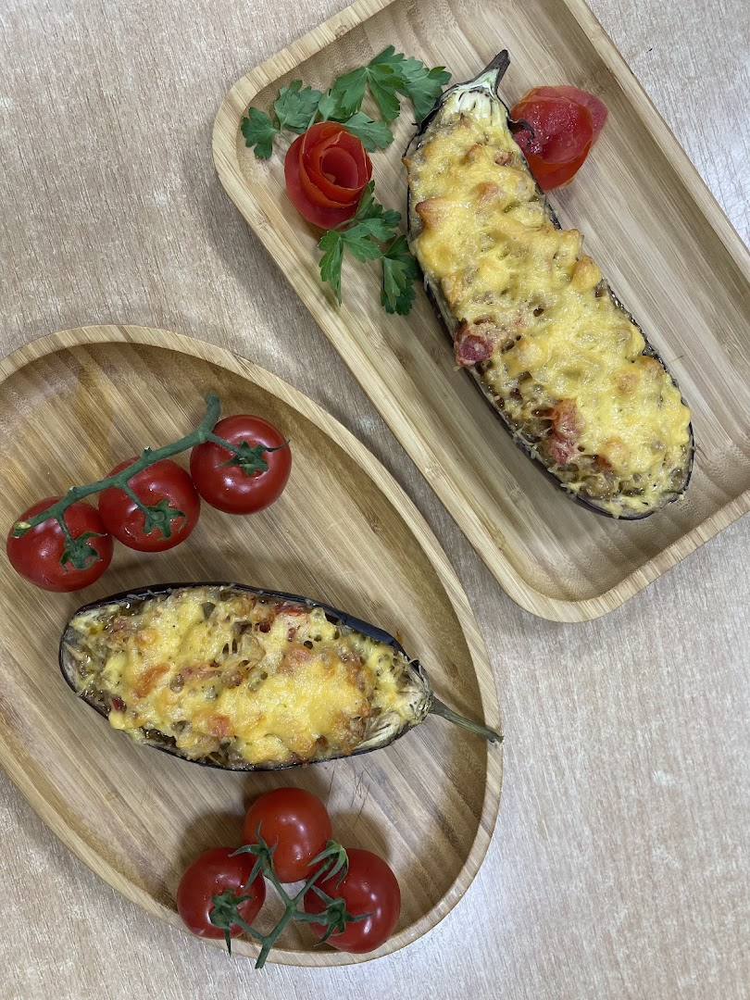
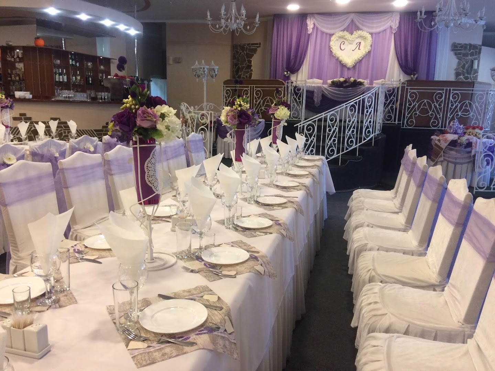

Ресторан Апельсин у Кропивницькому — затишок, вишукана кухня та незабутні події
Відчуйте атмосферу гармонії, тепла та неперевершеного смаку у серці нашого міста.
Простір затишку та смаку
Ресторан «Апельсин» розташований у затишному куточку Кропивницького за адресою вул. Шосейна, 4. Заклад ідеально підходить як для романтичних вечорів, так і для гучних сімейних свят, банкетів чи дружніх зустрічей.
Меню ресторану пропонує широкий вибір страв європейської кухні, приготованих зі свіжих та якісних інгредієнтів. Професійне обслуговування та увага до кожного деталю створюють справжнє відчуття свята.
Дізнатися більше →
Переваги ресторану Апельсин
Різноманітні зали
Простора банкетна зала, дві затишні VIP-зали та мальовничі дерев'яні будиночки на свіжому повітрі.
Європейська кухня
Широкий вибір вишуканих страв, приготованих зі свіжих та якісних інгредієнтів професійними кухарями.
Зручна парковка
Передбачена комфортна автостоянка для відвідувачів на автомобілях для вашого спокою.
Заплануйте свій незабутній вечір
Зв'яжіться з нами телефоном або завітайте за адресою вул. Шосейна, 4, Кропивницький.
Контакти та адреса